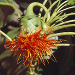
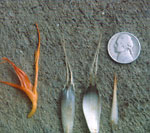
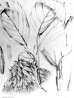
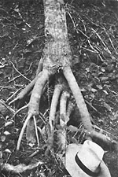
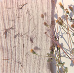
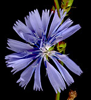

|
 |

{kind=link}

{kind=link}

{kind=link}

{kind=link}

{kind=link}

{kind=link}
THE FITCHIA STORY
...beginning a career in botany
Visiting Hawaii in 1953. I had been counting chromosome numbers in Asteraceae (Compositae, sunflower family) as an undergraduate at Berkeley. Eriophyllum mostly. As a birthday present, my mother gave me some money and told me to go anywhere I wanted with it. An unusually liberal move for her, but I was grateful for it. It wasn’t a large amount, but I thought that I probably could manage two weeks in Hawaii with it. My reason was that I wanted to count chromosome numbers in Hawaiian composites—the silverswords etc. Also, I had become interested in composites in general. Riffling through the herbarium at UC, I had discovered specimens of Fitchia speciosa, which has big heads that turn downward, the biggest fruits in the family, and is a tree. It is native to Rarotonga. How could something with such huge fruits get to Rarotonga? What were its relatives? (The three guesses in the literature were helianthoid, mutisioid, or cichorioid lines of the family). It had once been cultivated near Honolulu and had apparently gone wild in a very limited area. Was it still there? I hoped to find it and get material for study. So with both the silversword project (see TARWEEDS AND SILVERSWORDS on this website) and the Fitchia project in mind, I did go to Hawaii in July of 1953.
The Hawaiian field work was the first extensive field work I had done. I did the hikes alone, on my own, using some helpful information from Harold St. John. That’s how I collected the silverswords (Argyroxiphium) and their relatives (Dubautia, Wilkesia). I did find Fitchia speciosa still growing along the Tantalus—Round Top Road behind Honolulu. It wasn’t in flower, but I collected leaves, stem, wood, seedlings. There were some pickled heads from that population preserved in the Bishop Museum. I stole those. There were some herbarium specimens of Fitchia at the Bishop and I knew I could borrow those in the unlocked cases but there were others in the type specimen cases and type specimens aren’t loaned. While the curator (who didn’t want me even to see the types) was out, I found the key to the type cabinets and snitched bits of material from the specimens of Fitchia there. You have to remember that I was a beginning graduate student. The only person who had confidence in me was Lincoln Constance, my mentor at Berkeley. I didn’t have a lot of confidence in myself, but I was determined. I knew the Bishop Museum wouldn’t give me the pickled Fitchia material or bits from the type specimens, I was nobody to them. I took them (judiciously). There was no other way. If I hadn’t taken the pickled material, it would have been thrown out long ago; pickled material typically is not saved for long periods of time. I thought that dried material might be used for anatomical studies, although few had at that time, so tiny portions from the type specimens and other specimens were taken without a request to the director. This material worked quite well. Why anatomical studies? I had taken a wonderfully lucid plant anatomy course from Adriance Foster at Berkeley. I thought that with anatomical studies, I could solve the mystery of the relationships of Fitchia within the family Asteraceae
I did do that study for my Ph.D. thesis at Berkeley. A wide-ranging exploration that got me started in studies in plant anatomy, especially wood, and gave me an interest in using the comparative method in plant anatomy. And, of course, because Fitchia is native to southeastern Polynesia, I became interested in island biology. How did plants get to islands and how did they change after they arrived there? Fitchia is woody—a tree or a shrub, depending on the species. Its closest mainland relatives appeared to be Bidens, which we know as an annoying weed, the fruits of which get caught on socks. The Bidens-like ancestors must have become woody under the island conditions. The fruits must have increased greatly in size to suit forest habitats. Bidens is present on Hawaii, Tahiti, and other Pacific Islands, so it does have the dispersal capability and reached these islands in relatively recent time (less than 5 million years ago). Fitchia and a sister genus, Oparanthus, must have evolved from Bidens-like ancestors that reached Polynesia at an earlier time (more than 6 million years ago, probably) than the Pacific Bidens species, because Fitchia and Oparanthus have changed from Bidens in striking respects. Among them are the pendant heads, and the large orange flowers, full of nectar. Fitchia is bird-pollinated—meliphagids are native to the islands where it grows. A dramatic change from Bidens, which is pollinated by butterflies or perhaps bees (or self-pollinated). The melaphagids must roost on the rather strong stems of Fitchia and aim their beaks upwards into the orange flowers. The union of the five corolla lobes represents a kind of flag, directing them into each flower. The five corolla lobes are loosely united, and the idea that the flowers of Fitchia are ligulate flowers like those of the Lactuceae (Cichorieae) was just the product of poor observation, although that placement of the genus was what one found in the influential Die natürlichen Pflanzenfamilien, a world flora at the generic level. So understanding phylogeny and taxonomy were essential to my Ph.D. thesis became integral parts of my mission in botany. Incidentally, a genus with a single species, Petrobium, from St. Helena Island in the Atlantic, was placed next to Fitchia in the Pflanzenfamilien. Fitchia and Petrobium were independently derived by early migrations of Bidens-like ancestors from continents to islands by long-distance dispersal, although those who didn’t believe in long-distance dispersal naturally had funny alternative explanations for why Petrobium should resemble Oparanthus and Fitchia.
I made far too many preparations of Fitchia, a study in overkill. I quickly found that Hooker’s idea that Fitchia was helianthoid was the correct one—the pair of awns at the top of each achene was really telling its relationships. But things such as the secretory canals are like those of helianthoids. Studying the anatomy of Fitchia and some probable helianthoid relatives was my entry into studying many other island plants, secondary woodiness in island plants, loss of dispersibility in island plants, changes in pollination mechanisms in islands plants, and comparative plant anatomy. It was the start of studies in Asteraceae, which led to my studies, tribe by tribe, of wood anatomy of Asteraceae. And Asteraceae proved to be the ideal family for showing how wood evolved with relation to ecology, resulting in the important 1966 paper that began ecological wood anatomy. So the thesis on Fitchia (most of it published in a long 1957 paper) contained the seeds of all of my subsequent work, in one way or another. Finding that sheet of Fitchia speciosa in the U.C. Berkeley herbarium was an important event. Finding it wasn’t the event, however. Becoming intrigued with the plant and wondering how such a plant could have evolved on Rarotonga and other Fitchia species on other Polynesian islands was the event: responding to seeing the specimen, trying to imagine what it meant.
Some thoughts about doing a Ph. D. thesis. When I decided to do the thesis on Fitchia, I had been doing chromosome studies in Eriophyllum and related genera, and while I mostly found the correct numbers (I missed some!), I realized that chromosome botany wasn’t what I wanted to do. My advisor, Lincoln Constance, was on a sabbatical visit to Chile at the time, and I wrote him telling him that I wanted to do the thesis on Fitchia. He wrote back, saying that it was fine with him. Lincoln knew enough to let me go where I wanted to. He didn’t know anything about the Fitchia story. The other two members on my Ph.D. committee were Adriance Foster and Ledyard Stebbins. They didn’t know anything about what I was doing either, until I presented them with the complete thesis draft in one big chunk. Now that’s risk-taking, and students wouldn’t get away with doing that today. Presented with a fait accompli, they wisely caved, with few comments. But the interest in that little story is not what I got away with, but that I didn’t work on a project given to me by an advisor. By going my own way from the outset of my career, I developed an identity and therefore ideas that were different from those of my advisors. I had a degree of freedom that is probably not possible in today’s academic world. And somehow, shy and uncertain-seeming kid though I was, I used that freedom creatively. Adriance Foster was good at developmental anatomy, but he knew nothing about comparative plant anatomy. That worked in my favor, because I developed my own version of comparative plant anatomy, based on what I was learning from the plants, not from the canons that had developed in the world of plant anatomy—especially wood anatomy and floral anatomy. I have always said since that a good graduate student is his/her own student, not the student of Professor X. I hate hearing who studied with whom, because all too often, that’s a history of passing on a professor’s limitations, not liberating students into finding their own way. And changing from one’s academic antecedents is essential for creating a good career in science. What market is there for a graduate student who merely does some of what his major professor does, rather than moving into new areas and ways of looking at natural history?